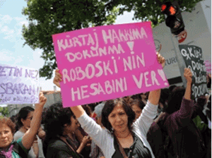
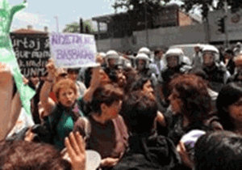

|
|

دستها از بدن من کوتاه!
شنبه6 آبان 1391
شهرزادنیوز:رجب طیب اردوغان، رئیس دولت ترکیه، هفته پیش در یک سخنرانی اعلام داشت که "سقط جنین قتل است" و او مخالف آن می باشد. سخنان اردوغان جدال سنت و مدرنیته را در ترکیه تشدید کرد، خشم زنان برانگیخت، آنها به خیابانها آمدند تا اعتراض خویش نسبت به آن اعلام دارند.
هفته گذشته در تمامی تظاهراتی که در شهرهای مختلف ترکیه برگزار شده بود، دو شعار عمومی بود: "دستها از بدن من کوتاه" و " بدن من مال من است، من خود در مورد آن تصمیم می گیرم."

مدافعان حقوق زنان سخنان اردوغان را دخالت در زندگی شخصی افراد جامعه می دانند. آنان اعلام می دارند که "هر فردی در انتخاب شیوه زندگی آزاد است، حق شهروندی هر فردی است که خود در مورد چگونگی تشکیل خانواده تصمیم بگیرد."
سازمانهای زنان هشدار دادهاند که این سخنان حرکت جدید دولت است برای ممنوع کردن سقط جنین و بازگرداندن ترکیه به سنتهای مذهبی.
دولت ترکیه می خواهد قانونی بگذراند که طی آن قانون آزادی سقط جنین را تا دهمین هفته بارداری به چهار هفته تقلیل دهد. اردوغان در همین رابطه است که می گوید: "قتل قتل است، چه در شکم مادر و چه زمانی که کودک به دنیا بیاید."
عایشه کولین، نویسنده و همکار یونیسف در ترکیه، به گزارشگر تلویزیون آلمان می گوید: "از هر پنج زن ترک یک نفر تجربه سقط جنین دارد، و این یک مقیاس طبیعی در جهان است. در دیگر کشورها هم آمار چنین چیزی را نشان می دهد. اردوغان در رسانههای ارتباط جمعی اعلام داشته است؛ زن خوب ترک کسی است که حداقل سه بچه بزاید و این مسخره است."
ناسیونالیستهای ترک از سخنان اردوغان به وجد آمدهاند. کولین می گوید: "آنان فکر می کنند که فرزند بیشتر همانا ترکیه قویتر است. آنها اصلاً به سکسوآلیته فکر نمی کنند و اینکه چرا پیشگیری از بارداری لازم است. ما در ترکیه با زنان جوانی روبرو هستیم که در مناطق دوردستِ کشور ساکن هستند و از آموزش جنسی لازم بهرهمند نیستند و در نخستین تماس جنسی حامله می شوند و یا دخترانی که مورد تجاوز قرار گرفتهاند و حامله شدهاند."
در روزنامههای ترکیه هر روز خبرهایی از خشونت جنسی علیه زنان گزارش می شود؛ زنانی که از شوهر، برادر و یا پدر کتک خوردهاند، با تبر به قتل رسیدهاند، ربوده شده و مورد تجاوز قرار گرفتهاند. تنها در سال 2010 بیش از 6500 زن بر اثر خشونت جنسی در بیمارستان بستری شدهاند. طبیعیست که آمار واقعی بسیار بالاتر از این رقم باشد، زیرا چه بسیار مواقع مصدومین به بیمارستان مراجعه نمی کنند و یا از مراجعت آنان به مراکز درمانی و قضایی جلوگیری می شود.
در بخش بزرگی از ترکیه به سان دیگر کشورهای سنتی، موضوع سکس در شمار تابوهاست. یکی از فعالین حقوق زنان می گوید: "ما در آغاز راه هستیم، هنوز در مدارس ما اجازه داده نمی شود کاندوم و چگونگی استفاده از آن توضیح داده شود."
در ترکیه سکسوآلیته به عنوان یک موضوع آموزشی در درسها غایب است. کمتر خانوادهای یافت می شود که در این مورد با فرزندان خویش صحبت می کنند. عشق در خفا ابراز می شود و دختر در نخستین تجربه جنسی حامله می شود. پسر راهش را می گیرد و می رود. دختر جوان حامله چه می تواند بکند با جنینی ناخواسته در شکم که موجب "ننگ" خانواده نگردد.
سقط جنین تنها راه پیشگیری از "بدنامی" است. در چنین مواردی همیشه زن است که بار رنج را بر دوش دارد. مرد آزاد است و پاسخگوی چیزی نیست، خانواده را هم به "ننگ" آلوده نمی کند.

پارلمان ترکیه در نوامبر 2012 قصد محدودیت سقط جنین را داشت که اعتراضات گسترده زنان باعث شد تا انجام آن را به ده هفته تقلیل دهند. با این شرط که زن پیش از سقطجنین در پیشگاه کمیسیونی مورد مشورت قرار گیرد. طبیعیست که نمایندگان مجلس نخواستهاند در علت موارد حاملگی ناخواسته بحث کنند.
کولین می گوید: "ما یک جامعه مدرن می خواهیم که با واقعیتهای زندگی سازگار باشد. زندگی جنسی نیز بخشی از زندگی است. ما باید به بچههایمان بگوئیم که هیچ چیز غیراخلاقی پشت موضوع سکسوآلیته وجود ندارد."
بحث بر سر سقط جنین در ترکیه ادامه دارد، اعتراضات گسترش می یابند، واقعیت زندگی جوانان در ترکیه چیزی نیست که بتوان آن را در زندان سنتهای مذهبی اردوغان مدفون کرد.